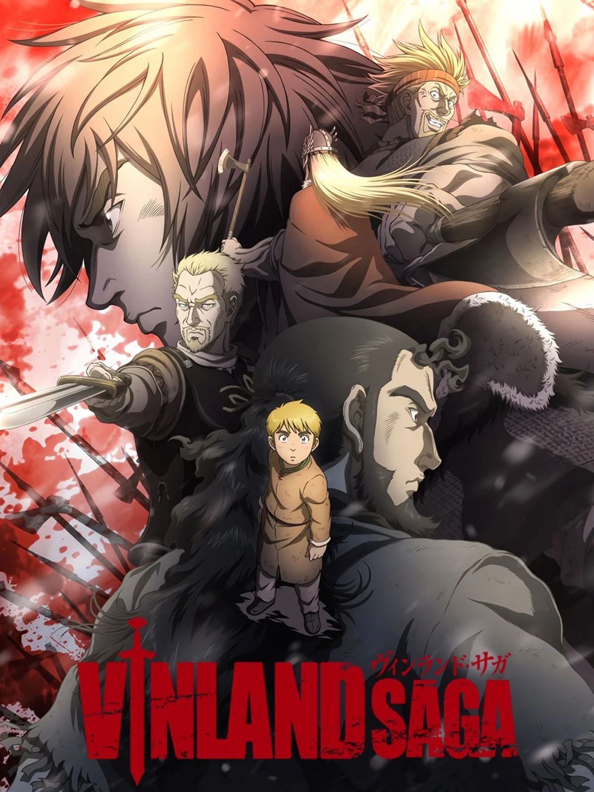
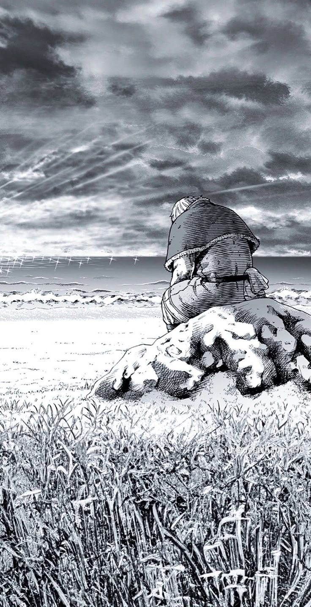
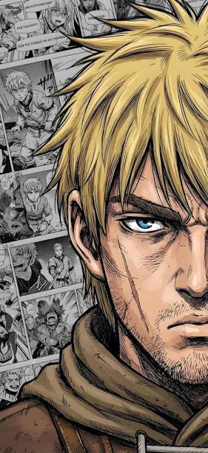
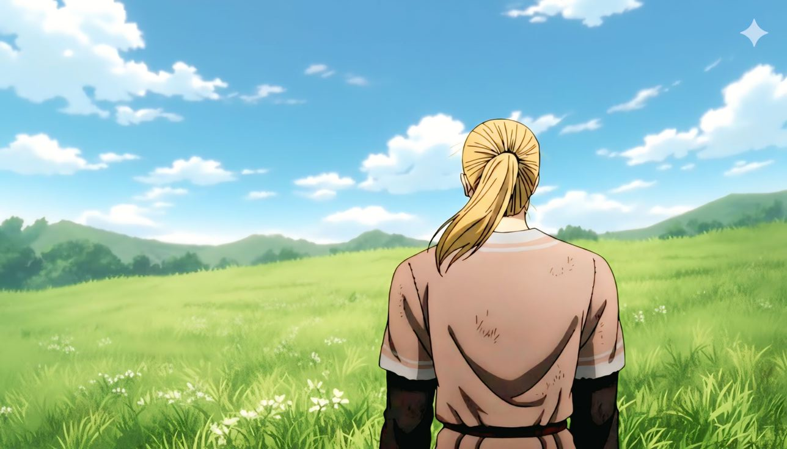

Mangá + anime · uma mesma jornada
Entre o mar
e a terra firme.
Vinland Saga não é só uma história de vikings. É uma história sobre perder o caminho, encontrar pessoas e escolher o que fazer com a própria força.

MANGÁ + ANIMEarte que carrega cicatrizes
“
Você não tem inimigos.
— Thors, o Troll de Jom

O caminho de Thorfinn
Uma saga em
quatro marés.
Vinland Saga é uma história de transformação. Cada arco deixa para trás uma versão de Thorfinn — e revela outra maneira de lutar.
A jornada começa no conflito, mas encontra outro sentido no caminho.

Rostos da jornada
Homens que
escolheram mudar.
Do quadro preto e branco do mangá às cores do anime, a história continua falando da mesma coisa: o que fazemos depois que a raiva deixa de ser suficiente.

um lugar para recomeçarO manifesto
Um lugar sem
inimigos.
“Eu não tenho inimigos.” Mais do que uma frase, Vinland é uma escolha diária: trocar a violência pela construção, a vingança pelo futuro, o medo pela possibilidade.
Levar essa ideia comigo